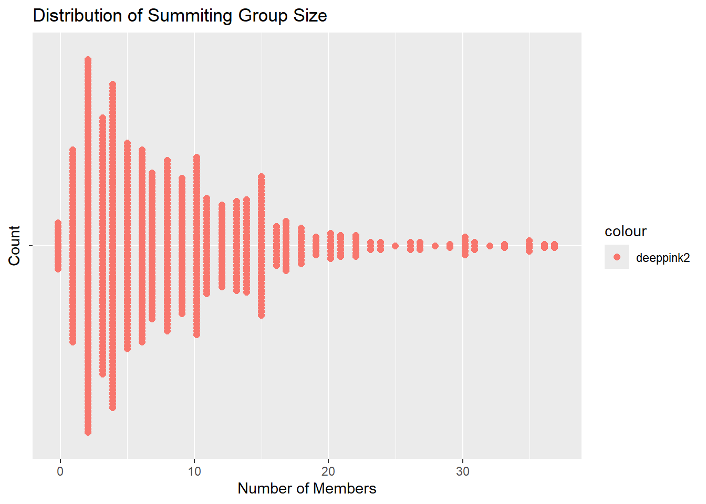
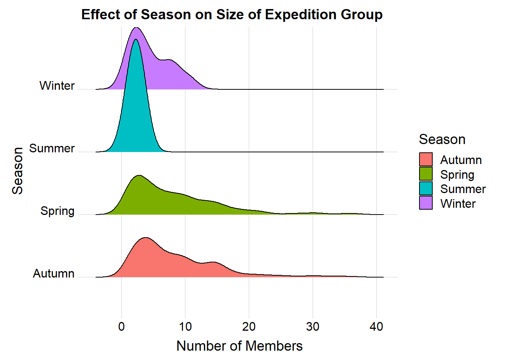
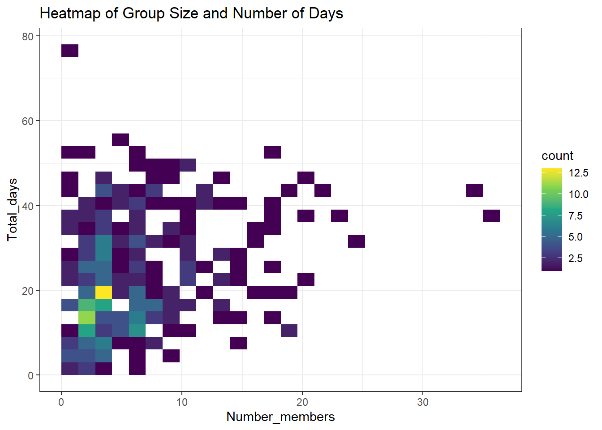
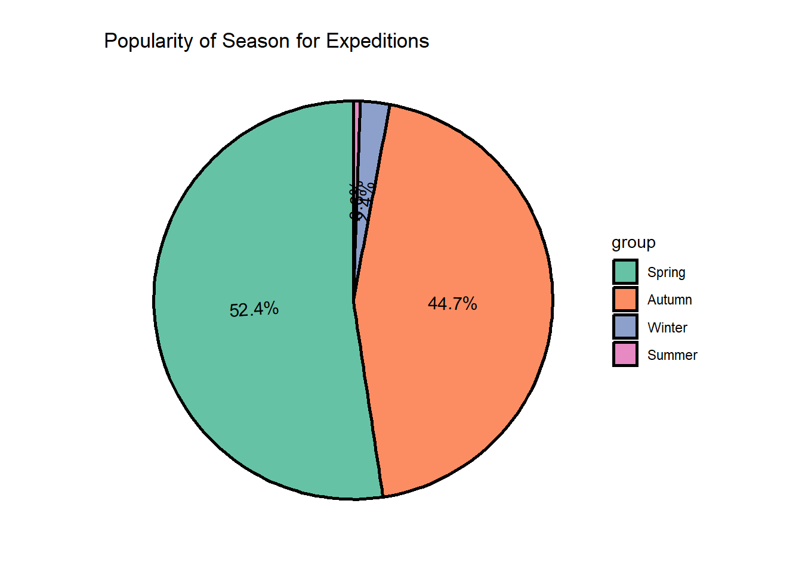

library(tidyverse)## ── Attaching core tidyverse packages ────── tidyverse 2.0.0 ──
## ✔ dplyr 1.1.4 ✔ readr 2.1.5
## ✔ forcats 1.0.0 ✔ stringr 1.5.1
## ✔ ggplot2 3.5.1 ✔ tibble 3.2.1
## ✔ lubridate 1.9.4 ✔ tidyr 1.3.1
## ✔ purrr 1.0.2
## ── Conflicts ──────────────────────── tidyverse_conflicts() ──
## ✖ dplyr::filter() masks stats::filter()
## ✖ dplyr::lag() masks stats::lag()
## ℹ Use the conflicted package (<http://conflicted.r-lib.org/>) to force all conflicts to become errorslibrary(ggbeeswarm)## Warning: package 'ggbeeswarm' was built under R version 4.4.3library(ggridges)## Warning: package 'ggridges' was built under R version 4.4.3library(ggpie)## Warning: package 'ggpie' was built under R version 4.4.3library(waffle)## Warning: package 'waffle' was built under R version 4.4.3library(tidytuesdayR)## Warning: package 'tidytuesdayR' was built under R version 4.4.3library(ggplot2)
library(GGally)## Warning: package 'GGally' was built under R version 4.4.3## Registered S3 method overwritten by 'GGally':
## method from
## +.gg ggplot2library(ggpie)
library(ggmosaic)## Warning: package 'ggmosaic' was built under R version 4.4.3##
## Attaching package: 'ggmosaic'
##
## The following object is masked from 'package:GGally':
##
## happylibrary(scatterpie)## Warning: package 'scatterpie' was built under R version 4.4.3## scatterpie v0.2.4 Learn more at https://yulab-smu.top/library(DescTools)## Warning: package 'DescTools' was built under R version 4.4.3library(treemap)## Warning: package 'treemap' was built under R version 4.4.3library(patchwork)
library(ggthemes)## Warning: package 'ggthemes' was built under R version 4.4.3library(dplyr)
#tuesdata <- tidytuesdayR::tt_load('2025-01-28')
#tuesdata_2<- tidytuesdayR::tt_load('2025-03-18')tuesdata <- tidytuesdayR::tt_load('2025-01-21')## ---- Compiling #TidyTuesday Information for 2025-01-21 ----
## --- There are 2 files available ---
##
##
## ── Downloading files ─────────────────────────────────────────
##
## 1 of 2: "exped_tidy.csv"
## 2 of 2: "peaks_tidy.csv"exped_tidy<-as.data.frame(tuesdata["exped_tidy"])
exped_tidy<- exped_tidy %>%
rename(
Summit_time=exped_tidy.SMTTIME,
Total_days=exped_tidy.TOTDAYS,
Number_members=exped_tidy.TOTMEMBERS,
Deaths=exped_tidy.MDEATHS,
Number_hired=exped_tidy.SMTHIRED,
Number_accidents=exped_tidy.ACCIDENTS,
Season=exped_tidy.SEASON_FACTOR
)# Beeswarm plot of Group Size of Mountaineers
Bees<-ggplot(data=exped_tidy)+
aes(x=Number_members, y='', color='deeppink2')+
labs(title='Distribution of Summiting Group Size',x='Number of Members',y='Count')+
ggbeeswarm::geom_beeswarm(method='center',size=2)
Bees## Warning: In `position_beeswarm`, method `center` discretizes the data
## axis (a.k.a the continuous or non-grouped axis).
## This may result in changes to the position of the points
## along that axis, proportional to the value of `cex`.
## This warning is displayed once per session.
#Ridgeline Plot of Season vs Expedition Size
Honda<-ggplot(data=exped_tidy)+
aes(x=Number_members,y=Season, fill=Season)+
ggridges::geom_density_ridges()+
ggridges::theme_ridges()+
labs(title='Effect of Season on Size of Expedition Group', x='Number of Members',y='Season')+
theme( axis.title.x = element_text(hjust = 0.5),
axis.title.y = element_text(hjust = 0.5))
Honda## Picking joint bandwidth of 1.35
str(exped_tidy$exped_tidy.SEASON_FACTOR)## NULL#exped_tidy$exped_tidy.SEASON_FACTOR<-as.factor(exped_tidy$exped_tidy.SEASON_FACTOR)# 2D Density Plot of Days to Summit and Group Size
ggplot(filter(exped_tidy,Total_days>0), aes(x=Number_members, y=Total_days) ) +
geom_bin2d(bins = 25) +
scale_fill_continuous(type = "viridis") +
theme_bw()+
labs(title='Heatmap of Group Size and Number of Days')+
theme(title=element_text(hjust=0.5))
#Pie Chart of Season and Group Size
library(palette)## Warning: package 'palette' was built under R version 4.4.3## Registered S3 method overwritten by 'palette':
## method from
## plot.palette DescTools##
## Attaching package: 'palette'## The following object is masked from 'package:grDevices':
##
## palettePecan<-ggpie::ggpie(data=exped_tidy, group_key='Season',count_type='full', label_info='ratio', label_type='circle')+
scale_fill_brewer(palette = 'Set2')+
labs(title='Popularity of Season for Expeditions')+
theme(title = element_text(hjust=.65))## Scale for fill is already present.
## Adding another scale for fill, which will replace the
## existing scale.Pecan 